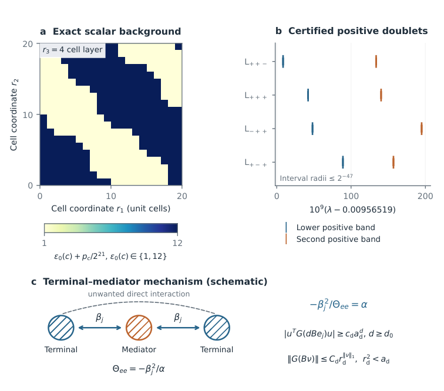
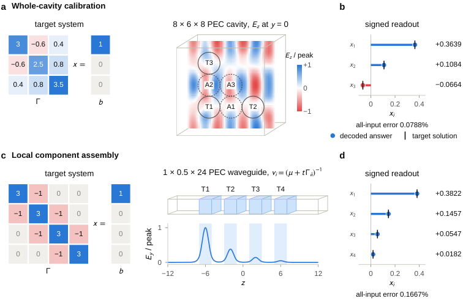

Formalizes the continuum Maxwell construction in Lean, covering operator, spectral, defect, leakage and residual-to-solution recovery proofs, with a public Lean development.
Abstract
Optical and wave-based analog computing has re-emerged as a route to accelerating linear algebra, with metamaterials and photonic circuits shown to invert matrices and solve integral equations. However, it has remained unclear which problems such passive structures can represent, and at what cost, once encoding, precision, conditioning and readout are accounted for. Here, we show that every polynomially conditioned sparse linear system can be compiled into a three-dimensional dielectric – a cavity filled with lossless, isotropic material of bounded permittivity – whose time-harmonic response encodes its solution. For $m$ nonzero coefficients, the volume of the structure and the cost of writing it down and reading out the answer scale as $\tilde O(m^{3/2})$, coefficients require only $O(\log m)$ bits, and every field that approximately satisfies Maxwell's equations decodes to an approximate solution. We prove the construction for the continuum equations and give a computer-assisted version for the Yee discretization underlying finite-difference solvers. Read in reverse, it implies that electromagnetic simulation is, up to this overhead, as hard as general sparse linear algebra: a sufficiently fast general-purpose Maxwell solver would yield a faster sparse linear solver.
Problem
It has been unclear which linear-algebra problems passive wave-based analog structures can represent, and at what cost, once encoding, precision, conditioning and readout are counted. The question is whether every well-conditioned sparse linear system can be encoded in a physical dielectric.
Approach
A sparse system is compiled into a degree-three logical network with a fixed coupling alphabet. The network is routed through a 3D cubic grid, and each site is realized as a localized electromagnetic mode in a bounded-permittivity dielectric cavity. Proofs cover the continuum Maxwell equations, with computer-assisted certificates for the Yee discretization. A Lean formalization of the continuum construction is described as substantially complete and is published in a companion repository.

Figure S2: Certified spectral setting and analytic interaction mechanism. (a) The exact scalar permittivity in cell layer r_{3}=4 (cell centers at r_{3}=9/2 ) of the period- 20 background. Each pixel is one scalar cell; the fixed perturbation is p_{c}/2^{21} , 0\leq p_{c}\leq 2046 . (b) Certified intervals for the two low positive eigenvalues of A_{\rm per}=C_{\rm Y}^{\mathsf{T}}C_{\rm Y}-D_{\vare
Results
Every polynomially conditioned sparse system with m nonzeros is encoded in a structure of volume and I/O cost Õ(m^{3/2}), with O(log m)-bit coefficients. Every approximate Maxwell solution decodes to an approximate solution of the original system. Consequently, a sufficiently fast general Maxwell solver would yield a faster sparse linear solver.

Figure 3: Calibrated cavities and reusable components give two numerical realizations. a , A prescribed signed matrix is encoded by six smooth spherical dielectric defects in an 8\times 6\times 8 PEC cavity. The left block shows the target system \Gamma x=b ; blue, red and gray cells mark positive, negative and zero entries. The plotted section is the signed electric-field phasor E_{z} at y=0 for